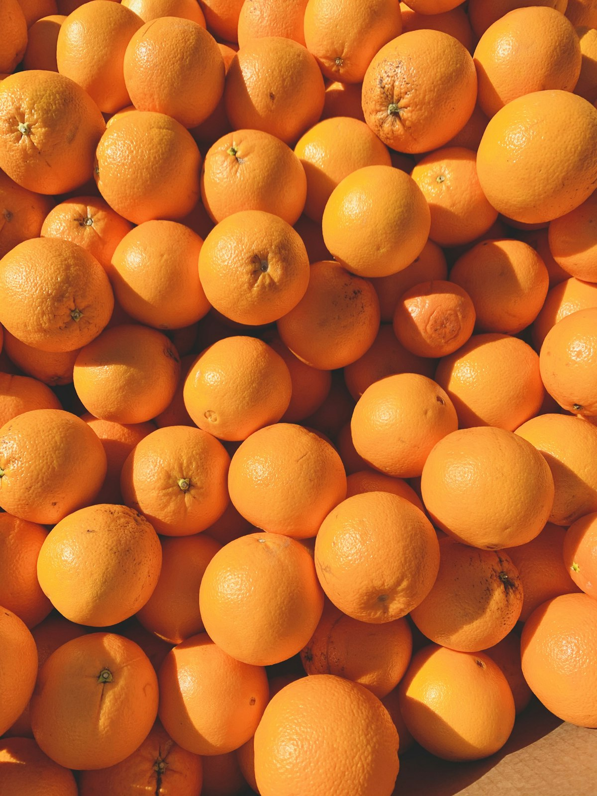
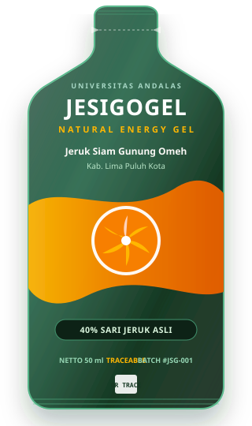
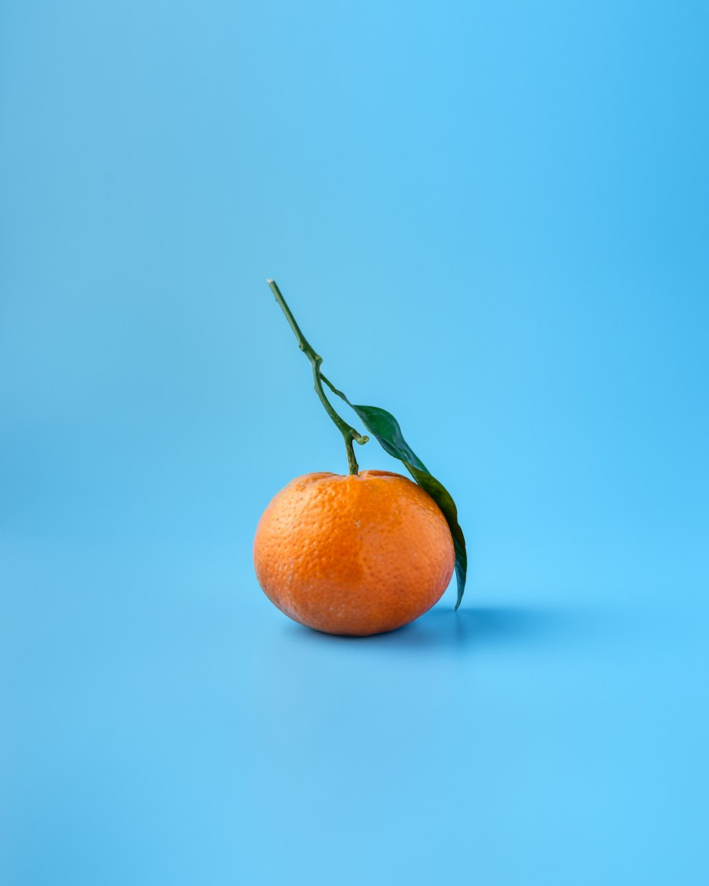
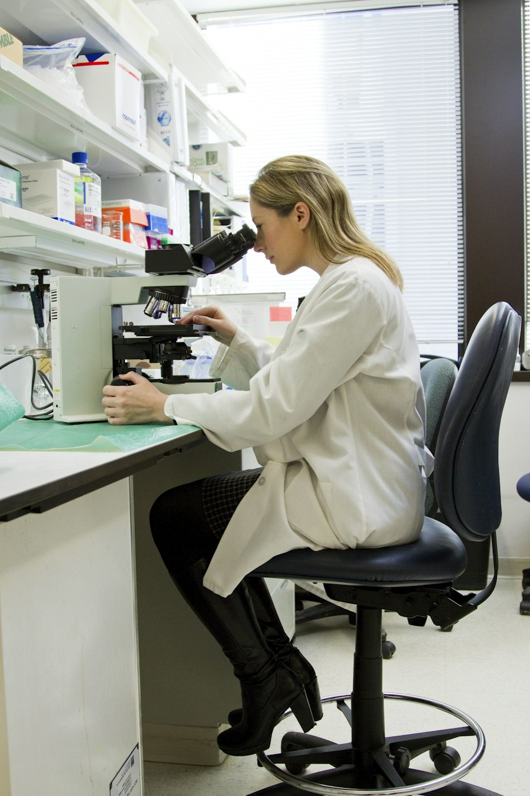
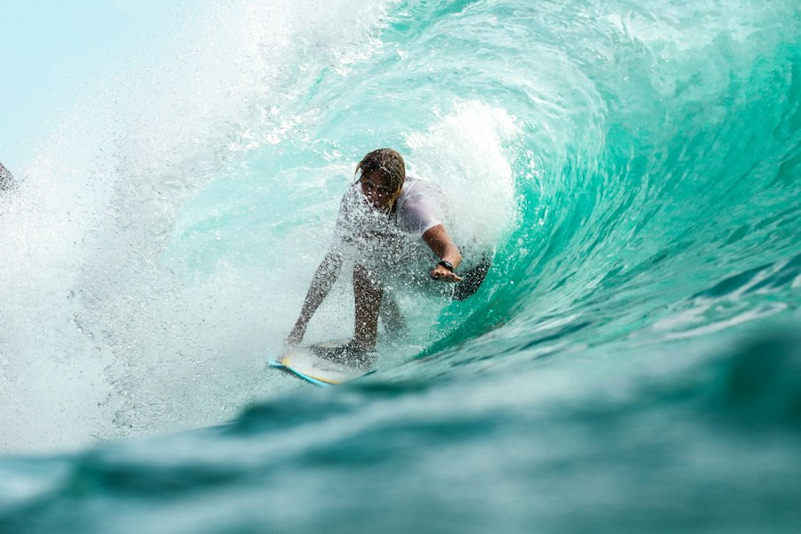
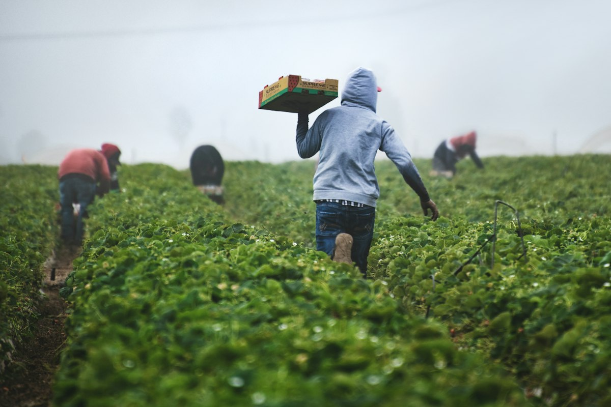

Dari Kebun, Sampai ke Gel Energi Anda.
Kenali perjalanan jeruk siam Gunung Omeh yang menjadi bahan baku JesigoGel — pangan berenergi tinggi yang mengusung transparansi penuh dari mitra petani hingga tangan Anda.

Varietas Jeruk Siam
Gunung Omeh • Elevasi 850 mdpl

JesigoTrace Passport Data
Panen: 08 Nov 2026 • Kemasan 50 ml
Lulus uji parameter keamanan & mikrobiologi
Kab. Lima Puluh Kota, Sumatera Barat
Perjalanan Produk
Storytelling 5 tahapan transparan: mulai dari dahan pohon mitra petani di Gunung Omeh hingga formulasi gel energi siap santap di saku jersey Anda.
Asal Kebun
Jeruk siam berasal dari kebun mitra petani Gunung Omeh, Kabupaten Lima Puluh Kota.

Pengumpulan dan Sortasi
Buah sortiran yang masih layak diolah dikumpulkan dari petani mitra.

Proses Produksi
Ekstraksi sari jeruk, formulasi gel, dan pengemasan dalam sachet 50 ml.
Pemeriksaan Mutu
Informasi pengujian keamanan pangan dan daya simpan sesuai hasil pemeriksaan.

Produk Siap Dikonsumsi
Produk JesigoGel siap didistribusikan kepada konsumen.

Dampak untuk Petani
Setiap pembelian JesigoGel turut mendukung pemanfaatan buah sortiran dan peningkatan nilai ekonomi hasil panen petani jeruk Gunung Omeh.
* Ilustrasi konsep antarmuka, bukan data batch aktual.

Mendukung Kemandirian Petani Nagari Koto Tinggi & Gunung Omeh
Alur Keterlulusan
Hanya 3 langkah sederhana dari kemasan fisik hingga lembar transparansi digital penuh.
Kemasan JesigoGel
Ambil sachet JesigoGel 50 ml Anda dan temukan kode QR otentik pada bagian belakang kemasan.
Pindai QR Code
Buka kamera smartphone Anda dan arahkan ke kode QR tanpa perlu mengunduh aplikasi tambahan.
Halaman Batch Produk
Dapatkan data riwayat asal kebun, tanggal petik, hasil uji lab, dan sertifikat mutu secara langsung.
Contoh Identitas Batch Produk
Ingin Cek Kemasan Anda Sekarang?
Masukkan kode batch dari sachet Anda atau gunakan barcode simulator kami.